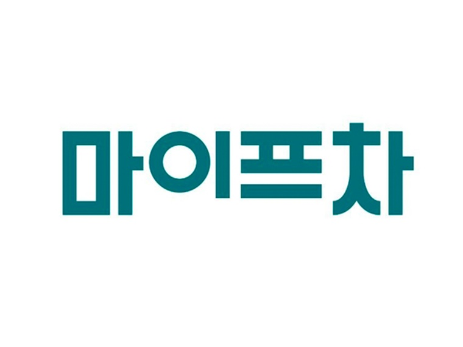
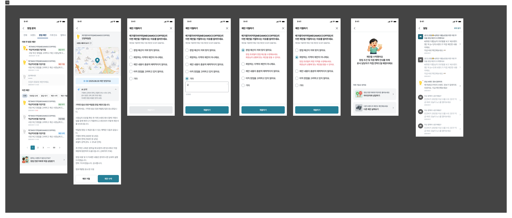
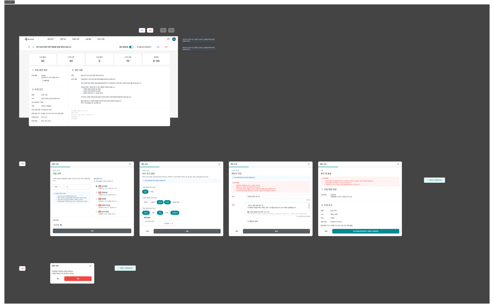
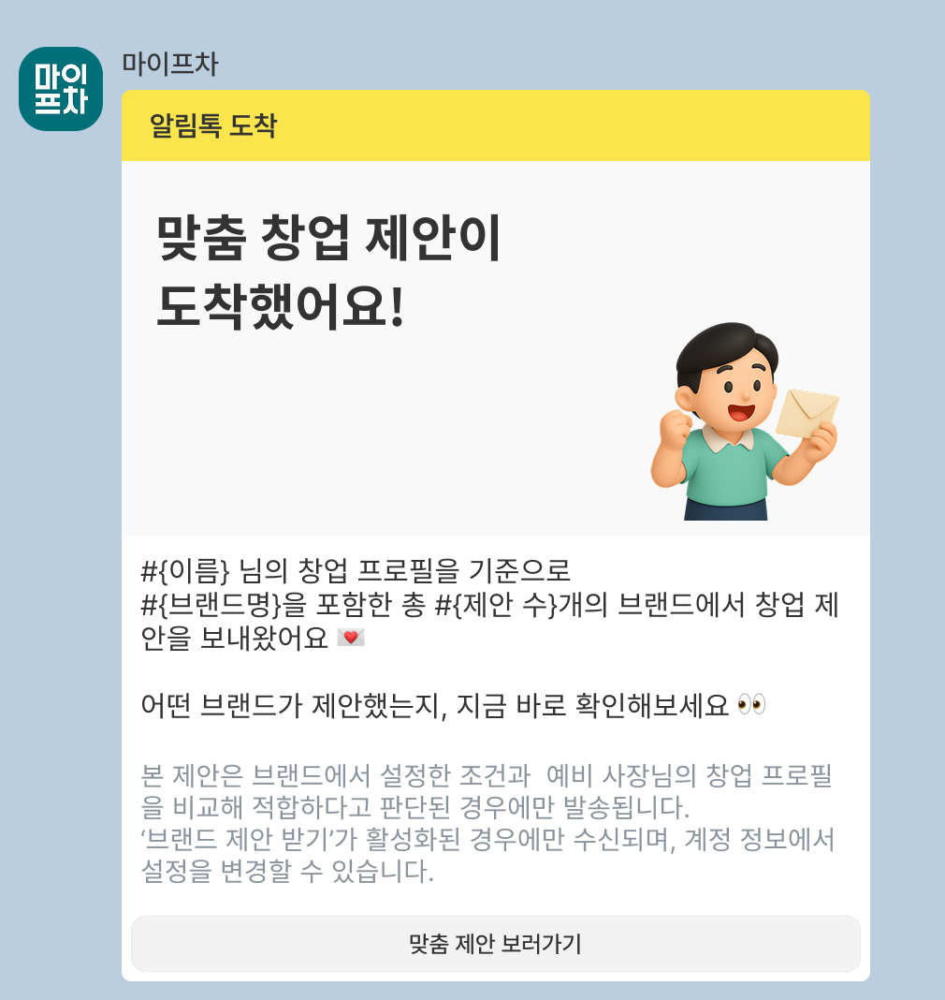
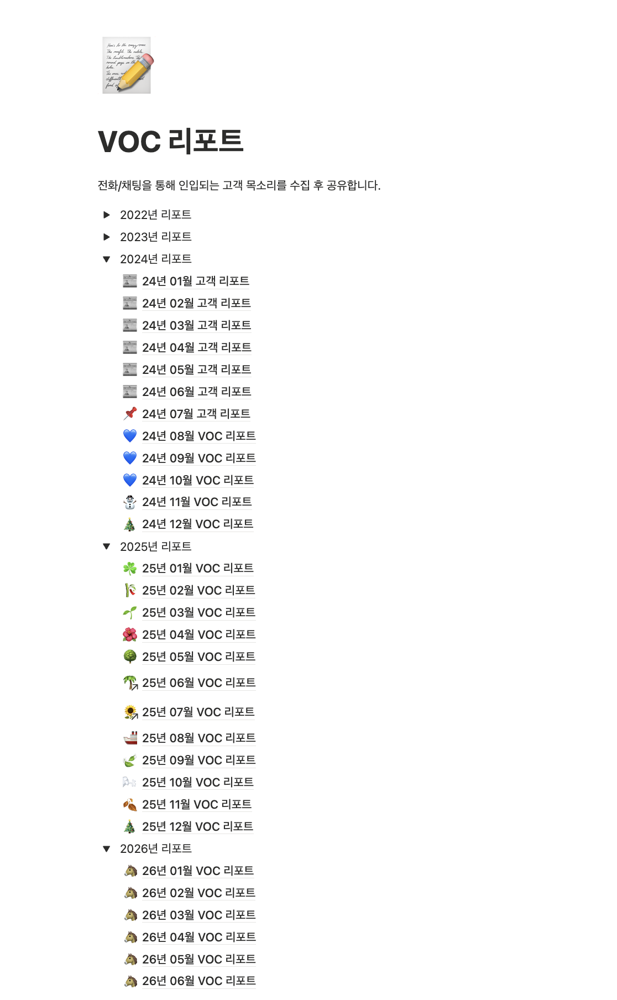

월간 VOC를 서비스·고객 유형·기능 태그로 구조화해 반복 불편과 이탈 구간을 찾습니다.
Experience
경력과 주요 프로젝트
아래 사례는 모두 페이지를 이동하거나 클릭하지 않아도, 배경·판단·실행·성과까지 순서대로 확인할 수 있습니다.

주식회사 마이프랜차이즈
서비스 기획자
프랜차이즈 창업 플랫폼 마이프차·파트너·지도 서비스 기획 및 운영
2023.09.11 – 현재
창업 제안 MatchUp
본사 선제안 기반 양방향 창업 매칭 기능. 초기 기획부터 출시, 퍼널 진단과 2차 개선까지 서비스 기획 1인 담당
B2C·B2B·AdminAI Matching정책·화면·QA데이터 분석
5.3배상세 조회 대비 수락률
10.33건개선 후 주평균 수락
111건창업 문의 생성
창업하기
창업 조건 관리부터 브랜드 상담 기록·비교까지 이어지는 창업 준비 경험
멀티 프로필상담 이력서비스 연결 정책
마이프차 지도
서비스 전담과 함께 회원·결제·환불·이용 제한 업무용 어드민 신규 구축
Admin운영 자동화결제·환불권한 관리
Data Lab 및 서비스 개선
기업의 데이터 구매 수요를 실제 문의로 연결하는 Framer 기반 공식 채널 구축
Lead GenerationFramer운영 연동
아래 상세 사례에서 전체 과정 보기 ↓
주요 프로젝트 상세
문제·근거·실행·결과만 남겨, 한 장의 경력 문서에서도 기여와 판단 과정을 빠르게 확인할 수 있게 정리했습니다.
단방향 창업 문의를 양방향 매칭 경험으로 확장
- 문제
- 고객은 문의 후 답변을 기다리고, 브랜드 본사는 적합한 예비 창업자를 먼저 찾기 어려웠습니다.
- 근거
- 유입보다 상세 화면 진입 이후의 수락 전환이 낮았습니다. 퍼널과 고객 행동을 다시 확인해 ‘결정 부담’을 핵심 병목으로 정의했습니다.
- 판단
- 고객이 먼저 문의하는 구조만으로는 매칭이 충분하지 않다고 보고, 브랜드 본사가 적합한 예비 창업자에게 먼저 제안하는 양방향 흐름을 설계했습니다.
- 실행
- B2C·B2B·Admin의 사용자 흐름, 제안·수락 정책, 화면, QA를 단독 기획했습니다. 출시 후에는 CTA·제안 내용·알림 구조를 분석해 2차 개선까지 조율했습니다.
- 결과
- 상세 조회 대비 수락률 5.3배, 개선 후 주평균 수락 10.33건, 누적 창업 문의 111건을 만들었습니다.



흩어진 데이터 구매 수요를 공식 문의 채널로 전환
- 문제
- 기업 데이터 구매 의향은 있었지만 상품을 이해하고 문의할 공식 접점이 없었습니다.
- 판단
- 정식 플랫폼 개발보다 ‘발견→상품 이해→문의’의 최소 흐름을 빠르게 검증하는 것이 먼저라고 판단했습니다.
- 실행
- Framer 기반 MVP의 콘텐츠 구조와 문의 폼을 기획하고, Google Sheets 적재·Slack 알림·영업 후속 처리까지 운영 흐름으로 연결했습니다.
- 결과
- 별도 광고 없이도 분기 약 1건의 B2B 문의를 확보해, 데이터 구매 수요를 확인할 수 있는 공식 채널을 만들었습니다.
브랜드 상세정보를 ‘서비스 노출 완료’까지 관리
- 문제
- 정량 정보만으로는 예비 창업자가 브랜드를 비교하기 어려웠고, 정보 품질과 회신 일정의 편차가 컸습니다.
- 판단
- 정보 요청이나 어드민 입력만으로 완료 처리하지 않고, 고객이 실제로 보는 서비스 화면에 정상 노출되는지를 완료 기준으로 잡았습니다.
- 실행
- 정보 수집·검수, 본사 커뮤니케이션, 누락 건 추적과 재검수를 맡았습니다. 지연·미완료 건은 우선순위를 조정해 노출 완료까지 관리했습니다.
- 결과
- 프로젝트 전체 약 5,000건의 브랜드 정보를 검수했고, 팀 목표인 1,000개 구축을 13일 조기 달성하는 데 기여했습니다.
고객 문의를 제품 우선순위 데이터로 고도화
- 문제
- 개별 VOC는 쌓였지만 반복 이슈와 개선 우선순위를 판단할 공통 기준이 부족했습니다.
- 판단
- 문의 사례를 단순 공유하는 대신, 월별 증감·반복 빈도·고객 영향을 함께 봐 제품 개선 우선순위를 논의할 수 있게 만들었습니다.
- 실행
- 서비스·고객 유형·기능 태그로 월간 VOC를 분류하고, 원인·고객 영향·개선 제안까지 연결했습니다. 제품 용어집과 분석 기준을 기반으로 반복 리포트 작업은 AI 스킬로 표준화했습니다.
- 결과
- 3개 서비스, 2026년 7월 210건을 분석했습니다. 반복 이슈와 개선 이후 변화를 같은 기준으로 확인하는 제품 의사결정 자료로 발전시켰습니다.

Earlier Experience · CX
CX 시절 주요 프로젝트
대규모 정보를 정확하게 완성하고 실제 서비스 노출까지 책임진 프로젝트입니다.
B1000 — 브랜드 상세정보 1,000개 구축
브랜드 정보 수집·검수, 본사 커뮤니케이션과 진행 관리를 맡아 최신·정성적 창업정보를 서비스에 실제 노출하는 실행 단계 담당
아래 상세 사례에서 전체 과정 보기 ↓1,000개브랜드 정보 구축
13일목표 조기 달성
450개4분기 팀 목표
약 5,000건프로젝트 전체 검수 규모
월간 VOC 리포트 고도화 및 AI 분석 자동화
고객 문의를 월별 수치·증감·반복 이슈로 구조화해 제품 개선 근거로 전달하고, 2026년에는 제품 용어집과 분석 지침을 결합한 재사용형 AI 스킬로 발전
아래 상세 사례에서 전체 과정 보기 ↓매월정기 리포트 발행
3개서비스별 분석
210건26년 7월 실제 VOC
AI 스킬분류·분석·시각화 자동화
로데브㈜
서비스 운영 매니저
코디마스터·신청콕 서비스 운영, 고객 지원, VOC 분석, QA 및 개선 기획
2019.11.04 – 2023.09.01
성수기 고객 문의를 운영 기준으로 정리
- 코디마스터·신청콕 서비스의 전화·구두 문의를 직접 대응하며 고객의 실제 사용 맥락을 수집했습니다.
- 성수기 하루 100~200건의 문의를 분석해 초기 설정 과정의 반복 질문과 안내 공백을 파악했습니다.
- 기능별 교육 영상을 기획·제작해 고객이 스스로 해결할 수 있는 안내 흐름을 보완했습니다.
94.7%2022년 사용자 조사
콜센터 만족도 · 11개 문항 중 최고 평가
콜센터 만족도 · 11개 문항 중 최고 평가
현장 문의를 개선 과제로 전환
- 전화와 구두 문의를 학교·시기·유형·처리 결과 기준으로 기록해 VOC 데이터의 기준을 만들었습니다.
- 반복 불편을 기능 요청과 QA 이력으로 남기고, 서비스별 이슈가 누락되지 않도록 관리했습니다.
- 영업·기획·개발 정기 개선 회의를 제안·운영해 현장 이슈와 제품 개선 우선순위를 연결했습니다.
100–200건성수기 하루 문의량을 분석해
초기 설정·안내 공백 개선 과제 도출
초기 설정·안내 공백 개선 과제 도출
운영자의 반복 업무를 줄이는 도구화
- 계약서·견적서 매크로를 제작해 반복 문서 작성과 확인 업무를 줄였습니다.
- 고객 응대 기준과 처리 이력을 정리해 담당자별 응대 편차를 낮췄습니다.
- 운영 현황을 ‘누가 무엇을 어떻게 처리했는지’ 추적할 수 있게 만들어 협업과 인수인계의 기준을 마련했습니다.
운영 표준화매크로·응대 기준·처리 이력을 묶어
반복 업무와 확인 대기 감소
반복 업무와 확인 대기 감소
Capability
업무 역량과 도구
Skills & Tools
Planning
Data
Collaboration & Build
Education
숭실대학교디지털미디어학과
2027.02 졸업 예정
2027.02 졸업 예정
평촌경영고등학교스마트콘텐츠과
2020.02 졸업
2020.02 졸업